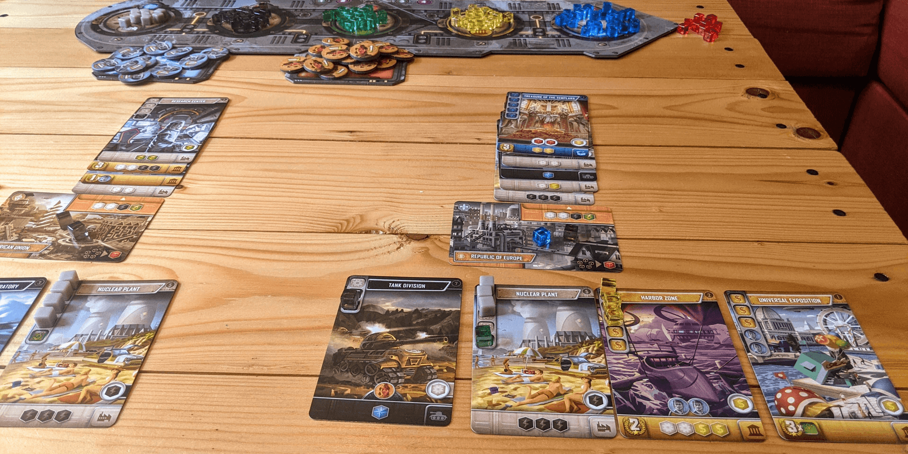
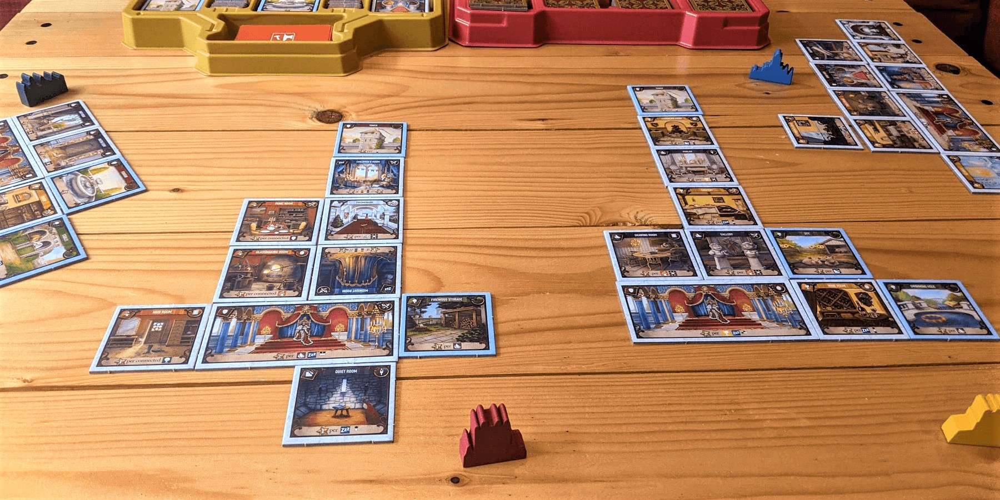

3 Great Games like 7 Wonders that You Need to Try
7 Wonders is a classic strategy game from 2010 that does so many things well: fast-paced gameplay for up to 7 players, simultaneous turns with little downtime, and a diverse set of strategies to choose from.
The mechanic of card drafting - playing a single card from your hand and passing the rest to the next player - provides great player interaction and high replayability. This fun mechanic is central to the success of 7 Wonders, and these other games feature it as well!
It's a Wonderful World
It's A Wonderful World is a must-try engine-building game for fans of 7 Wonders. In this game, players draft cards 7-Wonders style to build futuristic production empires. Each card you add to your empire produces various resources, gives victory points, or gives a mix of both. The rules are simple and this game is easier to pick up than 7 Wonders, but your brain may be burning even more in the final round!
You start off producing very few resources, and every card costs resources to activate. When drafting cards early on, you will likely focus on cheaper cards that increase your production levels. As the game progresses and your production grows stronger, you'll shift toward more expensive cards that focus on victory points.
Mastering this shift is no easy task though! You will constantly be weighing your options and will be forced to take risks along the way. You'll often find yourself thinking "this card produces so much Yellow for me, but there's only 1 round of production left. And this card *might* give me 10 VP if I can get enough Blue. But if I pass this card to April, she's going to get so many points! But that Yellow production!"
This is a great strategy game that packs a punch for how simple its gameplay is. Simultaneous turns and quick setup make this a great option for 3-5 players. Definitely check this one out if you're looking for a similar 7 Wonders experience and also love engine builders!
Buy It's a Wonderful World on Amazon
Sushi Go Party
During one round, you might press your luck to try to get 4 different Onigiri for a whopping 16 points. In the next round, you can play it safe with the Nigiri cards, worth 1, 2, or 3 points each. And in the final round, you might play risky and take 2 Tofu for 6 points, only to have your friend pass you a 3rd which erases those points!
Each time you play Sushi Go Party, you'll be playing with a different set of cards. You'll randomly select 3 Appetizers, 2 Specials, 1 Roll, and 1 Dessert to be in the game. This adds a nice level of strategic variation between plays, and it's always fun to find out which your group's favorite cards will be.
Overall, this game is more light-hearted and simpler to teach than 7 Wonders, so it's a great option for less experienced players. However, there's still enough strategy for a more experienced group to enjoy as well!
Buy Sushi Go Party on Amazon
Between Two Castles
Between Two Castles adds a couple unique twists to the card drafting genre that 7 Wonders is known for. First, you will be drafting tiles rather than drafting cards cards when building your castles. Second, you are not building alone! You build two shared castles - one with the player on your left, and one with the player on the right - and each castle also scores its own points. This turns Between Two Castles into an awesome game of cooperation-but-not-really, as your final score will be the *lower of* your two castles!
Each tile represents one room of a castle, and there are 6 types of rooms which score points in different ways. When drafting tiles, you pick two from your stack and pass the rest to the next player. You then work with each ally/opponent to decide which tiles to add to your shared castle.
To win this game, you need to try your best to score as many points for each of your castles while keeping them relatively balanced, which can be quite challenging. You can't simply put the best tiles into one castle and neglect the other, as only your weaker castle's score matters!
Sharing a castle with another player adds a ton of depth to this type of game, and it also reduces competitiveness and makes the game more fun for everyone. This is a game great for newer gamers, as you can collaborate and teach throughout the game!
Buy Between Two Castles on Amazon
Did we miss any good recommendations? Have other feedback for us? Send us an email at support@spiralburst.com and let us know!